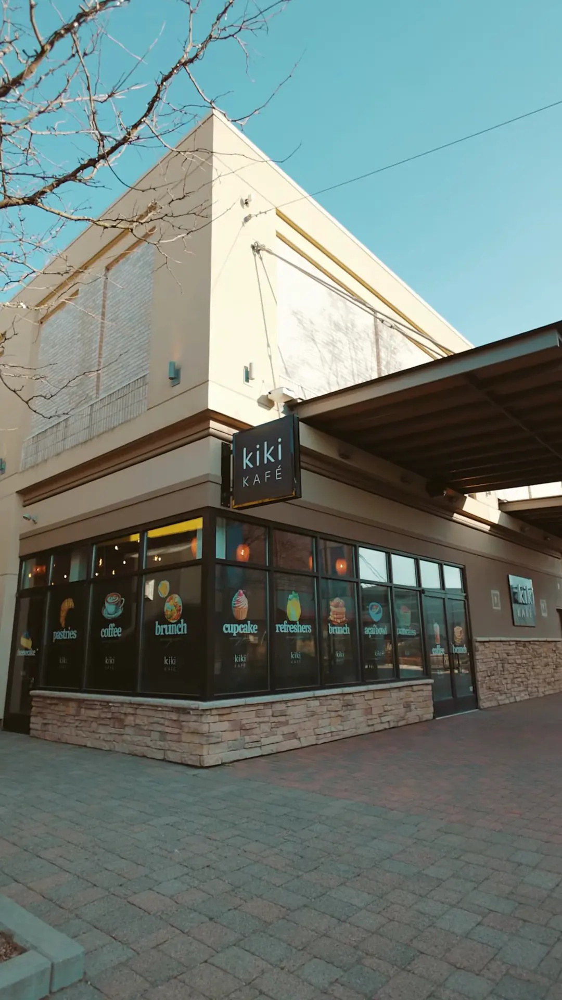
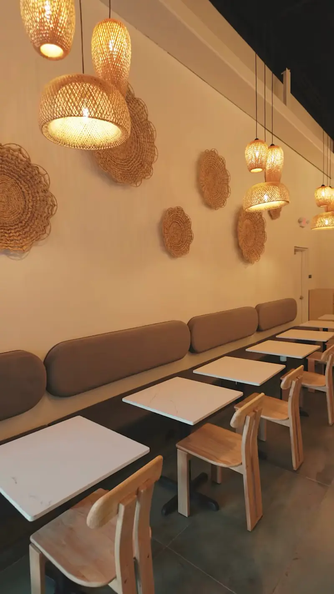
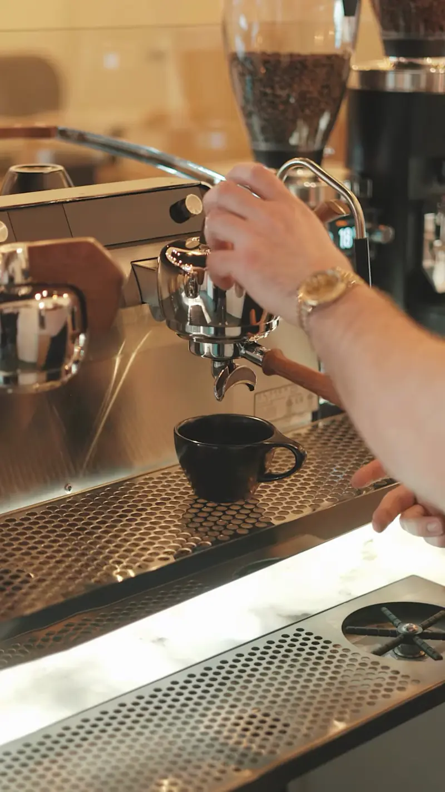
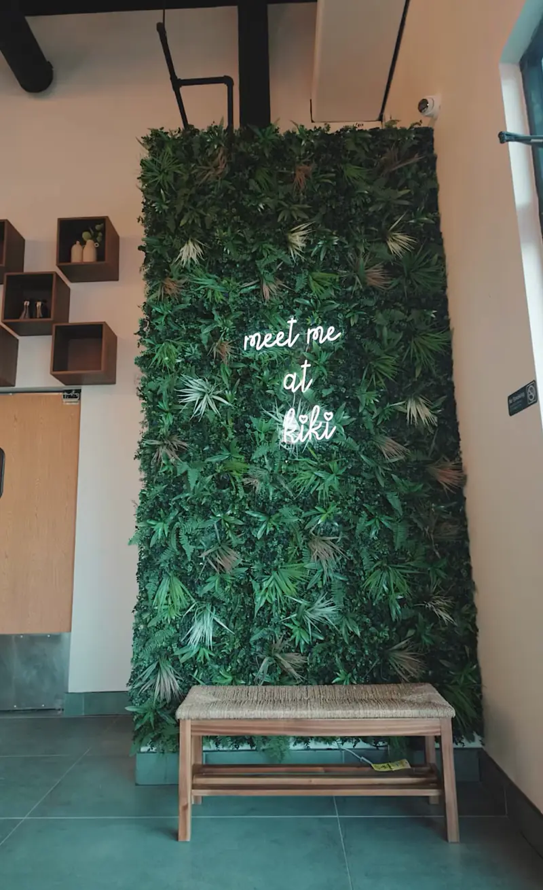
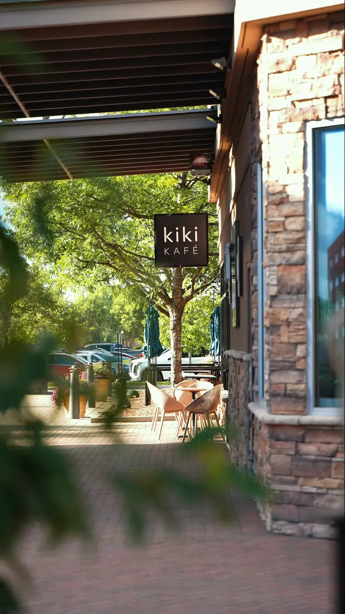

Espresso bar
Lattes, cappuccinos, macchiatos and signature espresso drinks.

Premium coffee, handcrafted daily.
The short answer
Kiki Kafé is a top-rated, locally owned premium café at 17370 Hall Rd, Suite 107, inside The Mall at Partridge Creek in Clinton Township. It pulls espresso to order and serves ceremonial-grade matcha, refreshers, Red Bull infusions, açaí bowls, made-to-order sandwiches, pastries and desserts. Kiki held its soft opening on Wednesday, March 19, 2025, and now has 280 Google reviews.
The café is built for staying. A living green wall with the neon line “meet me at kiki” anchors the room, and banquettes and wood tables fill the rest. Kiki stays open until 8 PM Monday to Thursday and until 9 PM Friday to Sunday.
Guests write about specific things: the cookie butter iced latte, the Smoke Bird sandwich, the oat milk brown butter draft latte, the caramelized banana latte, and staff who learn your order.

Find us
In Clinton Township, Macomb Township or Sterling Heights, the closest premium coffee is on Hall Road. Kiki Kafé pulls espresso to order, serves ceremonial-grade matcha and keeps the lights on until 9 PM Friday to Sunday.
Kiki Kafé is inside The Mall at Partridge Creek, which is open-air, so the coffee shop has its own outdoor entrance on the tree-lined walk. Look for the black Kiki sign between HopCat and California Pizza Kitchen. Tap Get Directions for turn-by-turn directions from wherever you are, or call (586) 300-6994.
| Day | Opens | Closes |
|---|---|---|
| Monday | 10:00 AM | 8:00 PM |
| Tuesday | 10:00 AM | 8:00 PM |
| Wednesday | 10:00 AM | 8:00 PM |
| Thursday | 10:00 AM | 8:00 PM |
| Friday | 10:00 AM | 9:00 PM |
| Saturday | 10:00 AM | 9:00 PM |
| Sunday | 10:00 AM | 9:00 PM |
The menu
Specialty coffee, drinks and food, made at the counter in Clinton Township. Order ahead on DoorDash for pickup or delivery in Macomb County.
Lattes, cappuccinos, macchiatos and signature espresso drinks.
Fruit-forward iced coolers, caffeine-free.
Energy drinks mixed with fruit and bold flavors.
Fresh sandwiches on artisan bread, made to order.
Croissants, danishes, bagels and scones.

Ceremonial-grade green tea lattes, iced or hot.
Cheesecake, cake pops and other sweet bites.
Açaí topped with fruit and granola.
Six seasonal drinks since September 1. See the fall menu.
Pickup or delivery from The Mall at Partridge Creek in Clinton Township, through DoorDash.
Order on DoorDashCaffeine guide
A quick guide for a late visit, a kid's order or a caffeine-free friend. The “caffeine” column follows Kiki's own menu wording and the ingredients each drink is built on.
| Category | What it is | Caffeine | Good for |
|---|---|---|---|
| Espresso bar | Lattes, cappuccinos, macchiatos, signature espresso drinks | Yes, espresso | Morning, study sessions |
| Matcha | Ceremonial-grade green tea lattes, iced or hot | Yes, green tea | A softer lift than espresso |
| Red Bull infusions | Energy drinks mixed with fruit and bold flavors | Yes, energy drink | Afternoon slump |
| Refreshers | Fruit-forward iced coolers | No, caffeine-free (per Kiki) | Evenings, kids, hot days |
| Açaí bowls | Açaí with fruit and granola | Not caffeine-based | Breakfast or lunch |
| Sandwiches and pastries | Made-to-order sandwiches; croissants, danishes, bagels, scones | No | Lunch, a snack with coffee |
| Desserts | Cheesecake, cake pops, sweet bites | No | After dinner at Partridge Creek |
Inside the café
Warm wood, woven pendant light, a living green wall and a tall palm by the counter. A room made for lingering over a second cup. Follow along at @meetmeatkiki.




fall at kiki
Six seasonal drinks since September 1, poured on Hall Road at The Mall at Partridge Creek in Clinton Township.
Clinton Township
Clinton Township is Kiki's home. With about 100,000 residents it is the most populous township in Michigan, and the latest Census estimate puts it at 100,447. Kiki sits on the township's Hall Road edge, inside The Mall at Partridge Creek.
Clinton Township has a young, local base for a coffee shop. 24.5% of residents are aged 18 to 34, the highest share of the three Hall Road communities on this page, and 5,578 residents are enrolled in college or graduate school. 5,816 Clinton Township workers work from home, and the rest average a 25.4-minute commute.
Make Kiki a stop before the township dog park or splash pad, or after a walk on the township's parks, trails and arboretum. Clinton Township works with the Macomb County Chamber and Connect Macomb to celebrate local businesses; its business page lists the rest.
Source: American Community Survey 2020–2024 5-year estimates, B01003, B08301, B14001, B08013.
Macomb Township
Hall Road (M-59) runs along the line between Clinton Township and Macomb Township, so Kiki is a short Hall Road trip for most of Macomb Township. The township has 92,629 residents and the longest average commute of the three Hall Road communities on this page, at 28.6 minutes. That makes a Hall Road coffee stop part of a lot of Macomb Township mornings.
6,916 Macomb Township workers work from home, 14.7% of the workforce. For them, a café with seating and evening hours makes an easy afternoon break. 5,299 Macomb Township residents are college or graduate students. Township news, parks and events: macomb-mi.gov.
Macomb Township and Clinton Township meet at Hall Road, so for most of Macomb Township the coffee shop at Partridge Creek is on the way to shopping, dinner or a movie at the mall.
Source: American Community Survey 2020–2024 5-year estimates, B01003, B08301, B14001, B08013.
Sterling Heights
Sterling Heights sits west of Clinton Township along Hall Road. Come east on M-59 to reach Partridge Creek. With 133,573 residents it is the second-largest city in Macomb County, and it leads Macomb County in two numbers that matter to a coffee shop.
Sterling Heights has more people working from home than any other Macomb County community: 9,666, or 15.7% of its workers. It also has the most college and graduate students in the county, 8,765. Those are the weekday laptop and study crowds every coffee shop knows. City events, including Sterlingfest, are on sterlingheights.gov.
Kiki is east of Sterling Heights on Hall Road, in Clinton Township, and it is where Sterling Heights comes for a slower cup: a seat at the green wall, ceremonial-grade matcha and evening hours.
Source: American Community Survey 2020–2024 5-year estimates, B01003, B08301, B14001, B08013.
Macomb County data
People who work from home are the weekday coffee shop crowd: the laptop at the corner table, the 2 PM latte between calls. The American Community Survey 2020–2024 5-year estimates count 56,713 Macomb County workers who work from home, 13.4% of the county's 423,414 workers. The table ranks the 15 Macomb County communities with the most remote workers. Kiki's three Hall Road neighbors are highlighted.
| # | Community | Residents | Work from home | College students | Avg commute |
|---|---|---|---|---|---|
| 1 | Sterling Heights | 133,573 | 9,666 (15.7%) | 8,765 | 24.7 min |
| 2 | Warren | 137,928 | 8,192 (12.8%) | 7,481 | 24.9 min |
| 3 | Macomb Township | 92,629 | 6,916 (14.7%) | 5,299 | 28.6 min |
| 4 | Shelby Township | 79,641 | 6,041 (15.7%) | 3,754 | 25.1 min |
| 5 | Clinton Township | 100,447 | 5,816 (11.7%) | 5,578 | 25.4 min |
| 6 | St. Clair Shores | 58,140 | 4,075 (13.8%) | 2,588 | 26.7 min |
| 7 | Chesterfield Township | 46,152 | 3,422 (14.4%) | 2,548 | 27.1 min |
| 8 | Roseville | 47,123 | 2,370 (10.4%) | 2,471 | 25.7 min |
| 9 | Washington Township | 28,569 | 1,872 (13.7%) | 1,414 | 30.0 min |
| 10 | Harrison Township | 24,061 | 1,780 (13.8%) | 1,033 | 28.2 min |
| 11 | Eastpointe | 33,982 | 1,522 (10.9%) | 2,060 | 26.4 min |
| 12 | Fraser | 14,583 | 1,067 (14.0%) | 695 | 23.5 min |
| 13 | New Baltimore | 12,072 | 703 (11.3%) | 623 | 30.7 min |
| 14 | Mount Clemens | 15,511 | 611 (8.4%) | 630 | 26.5 min |
| 15 | Bruce Township | 9,747 | 551 (12.1%) | 235 | 32.1 min |
Source: American Community Survey 2020–2024 5-year estimates, tables B01003 (population), B08301 (worked from home), B14001 (college and graduate enrollment) and B08013 (travel time). Average commute is aggregate travel time divided by workers who did not work from home. Estimates carry Census margins of error.
Macomb County at a glance
These five numbers describe the Macomb County coffee crowd. Macomb County has 879,853 residents. 56,713 of its workers work from home, 46,874 residents are college or graduate students, and 190,732 are aged 18 to 34. Macomb County commuters average 26.3 minutes each way.
Source: American Community Survey 2020–2024 5-year estimates, Macomb County, Michigan.
Every community
The full list, largest first. Clinton Township, Macomb Township and Sterling Heights are the three Hall Road communities closest to Kiki Kafé. Sterling Heights is the largest of the three, and Sterling Heights leads Macomb County in remote workers and college students.
| Community | Residents | Work from home | Aged 18–34 | College students | Avg commute | Median age |
|---|---|---|---|---|---|---|
| Warren | 137,928 | 12.8% | 23.5% | 7,481 | 24.9 min | 38.3 |
| Sterling Heights | 133,573 | 15.7% | 23.2% | 8,765 | 24.7 min | 41.7 |
| Clinton Township | 100,447 | 11.7% | 24.5% | 5,578 | 25.4 min | 40.2 |
| Macomb Township | 92,629 | 14.7% | 18.1% | 5,299 | 28.6 min | 41.1 |
| Shelby Township | 79,641 | 15.7% | 18.5% | 3,754 | 25.1 min | 45.5 |
| St. Clair Shores | 58,140 | 13.8% | 20.7% | 2,588 | 26.7 min | 43.8 |
| Roseville | 47,123 | 10.4% | 23.9% | 2,471 | 25.7 min | 41.0 |
| Chesterfield Township | 46,152 | 14.4% | 20.6% | 2,548 | 27.1 min | 41.3 |
| Eastpointe | 33,982 | 10.9% | 23.6% | 2,060 | 26.4 min | 36.1 |
| Washington Township | 28,569 | 13.7% | 17.5% | 1,414 | 30.0 min | 43.6 |
| Harrison Township | 24,061 | 13.8% | 22.8% | 1,033 | 28.2 min | 45.8 |
| Mount Clemens | 15,511 | 8.4% | 22.5% | 630 | 26.5 min | 42.0 |
| Fraser | 14,583 | 14.0% | 22.8% | 695 | 23.5 min | 43.0 |
| Lenox Township | 12,687 | 10.5% | 22.2% | 453 | 32.3 min | 35.1 |
| New Baltimore | 12,072 | 11.3% | 17.9% | 623 | 30.7 min | 44.7 |
| Bruce Township | 9,747 | 12.1% | 16.5% | 235 | 32.1 min | 44.9 |
| Center Line | 8,463 | 7.8% | 22.0% | 371 | 22.6 min | 40.5 |
| Richmond | 5,855 | 6.3% | 20.7% | 118 | 25.9 min | 39.7 |
| Armada Township | 5,325 | 18.1% | 13.1% | 282 | 29.0 min | 44.8 |
| Utica | 5,180 | 10.9% | 21.7% | 252 | 23.8 min | 45.3 |
Source: American Community Survey 2020–2024 5-year estimates, tables B01003, B08301, B01001, B14001, B08013 and B01002.
Ages 18 to 34
Iced lattes, matcha, refreshers and Red Bull infusions skew young. Across Macomb County, 190,732 residents are aged 18 to 34, 21.7% of the population. Clinton Township, Kiki's home, sits at 24.5%.
The table ranks Macomb County communities of 5,000 or more by the share of residents aged 18 to 34.
Source: American Community Survey 2020–2024 5-year estimates, table B01001 (sex by age) and B14001. Median age by community: B01002.
| # | Community | Aged 18–34 | Share | College students |
|---|---|---|---|---|
| 1 | Clinton Township | 24,614 | 24.5% | 5,578 |
| 2 | Roseville | 11,280 | 23.9% | 2,471 |
| 3 | Eastpointe | 8,021 | 23.6% | 2,060 |
| 4 | Warren | 32,358 | 23.5% | 7,481 |
| 5 | Sterling Heights | 31,048 | 23.2% | 8,765 |
| 6 | Fraser | 3,327 | 22.8% | 695 |
| 7 | Harrison Township | 5,485 | 22.8% | 1,033 |
| 8 | Mount Clemens | 3,495 | 22.5% | 630 |
| 9 | Lenox Township | 2,819 | 22.2% | 453 |
| 10 | Center Line | 1,861 | 22.0% | 371 |
| 11 | Utica | 1,125 | 21.7% | 252 |
| 12 | St. Clair Shores | 12,059 | 20.7% | 2,588 |
Across Macomb County
Everything comes back to Hall Road. Hall Road is M-59, and The Mall at Partridge Creek sits on it in Clinton Township. The notes below name the road, not a drive time, because traffic on Hall Road changes by the hour.
79,641 residents; 6,041 work from home (15.7%). Take M-59 east to Partridge Creek. Stony Creek Metropark covers 4,435 acres for a coffee-first day out.
46,152 residents; 3,422 work from home. Hall Road brings you west to the mall. Parks and the historical society: chesterfieldtwp.org. Lake St. Clair Metropark is a lakeside trip for later.
5,180 residents. The City of Utica describes itself as small-town life with big-metro amenities, and M-59 runs through it as Hall Road. Macomb County's trail network is open year round.
15,511 residents. Downtown Mount Clemens is the county seat, south of Clinton Township. Head north to Hall Road for Partridge Creek.
24,061 residents; median age 45.8. Hall Road and I-94 connect the Lake St. Clair shore to the mall.
137,928 residents, the most in Macomb County, and 7,481 college students, second only to Sterling Heights. Warren is south of Sterling Heights; head north through Sterling Heights to Hall Road.
28,569 residents and an average commute of 30.0 minutes, longer than the Macomb County average of 26.3.
58,140 residents; 4,075 work from home. Macomb County lists its attractions and visitor guide at macombgov.org.
The neighborhood
The Mall at Partridge Creek is an open-air shopping center on Hall Road in Clinton Township. Taubman Centers of Bloomfield Hills developed it, and it opened on October 18, 2007. It was the first mall to open in Macomb County since Lakeside Mall in 1976.
The Macomb Daily reported on February 15, 2005 that Taubman had confirmed “a multimillion-dollar outdoor, open-air shopping center in northern Clinton Township.” Because the mall is outdoors, Kiki's storefront opens onto a tree-lined walk with patio seating.
Kiki is next to HopCat and California Pizza Kitchen. Shoppers, moviegoers and concert crowds pass the door.

Timeline
Taubman confirms the open-air center in northern Clinton Township (Macomb Daily).
The Mall at Partridge Creek opens, the first new mall in Macomb County since 1976.
Kiki Kafé holds its soft opening, 10 AM to 8 PM, announced on Instagram as “brunch. desserts. coffee. all in one perfect spot.”
The Kiki Kart serves an outdoor concert at Partridge Creek. Kiki's Instagram post of August 7, 2026 reads “POV: You came for the concert, but stayed for Kiki.” See the event photos.
The fall menu launches with six new drinks, including the caramelized apple matcha. See the fall menu.
Reviews
Kiki Kafé is a top-rated Macomb County coffee shop with 280 Google reviews as of October 2, 2026. Three of them:
★★★★★“A 10/10 experience at KIKI KAFÉ! This local casual spot has a beautiful cozy ambiance, plenty of comfortable seating, and FANTASTIC customer service. ... A wonderful addition to Clinton Township.”
★★★★★“The coffee here is amazing. I always get their cookie butter iced latte. ... Hospitality is amazing, service is amazing, and their seating is perfect. It's my favorite study place.”
★★★★★“The owners are so sweet and actually take the time to talk to you and make you feel welcomed. The cafe is always really clean and cozy, and everything I've tried has been so good.”
Questions
Kiki Kafé is at 17370 Hall Rd, Suite 107, Clinton Township, MI 48038, inside The Mall at Partridge Creek, next to HopCat and California Pizza Kitchen. Hall Road is M-59, the road that connects Clinton Township, Macomb Township and Sterling Heights.
Monday to Thursday, 10 AM to 8 PM. Friday, Saturday and Sunday, 10 AM to 9 PM.
Kiki Kafé is the coffee shop inside The Mall at Partridge Creek. It serves espresso drinks, matcha, refreshers, Red Bull infusions, açaí bowls, sandwiches, pastries and desserts, and it has 280 Google reviews as of October 2026.
Kiki Kafé stays open until 8 PM Monday to Thursday and until 9 PM Friday to Sunday.
The café has banquette seating, tables and a green-wall lounge, and it stays open until 8 PM on weekdays and 9 PM Friday to Sunday. One Google reviewer calls it “my favorite study place.”
Yes. Kiki Kafé carries several non-dairy milks. Ask the barista for the current options.
Kiki describes its refreshers as caffeine-free. Espresso drinks, matcha and Red Bull infusions contain caffeine.
Yes. Order on DoorDash for pickup or delivery anywhere DoorDash serves in Macomb County.
Yes. Kiki serves ceremonial-grade matcha lattes, iced or hot, and açaí bowls topped with fruit and granola.
Kiki Kafé held its soft opening on Wednesday, March 19, 2025, from 10 AM to 8 PM, at The Mall at Partridge Creek in Clinton Township.
Kiki Kafé wrote this page on October 2, 2026. Coffee shop facts come from Kiki's own menu, hours and Instagram posts. The review count comes from Google. Demographic data comes from the U.S. Census Bureau. Local facts come from the official sources below, each opened and read on that date. No business paid to appear here.
17370 Hall Rd, Suite 107
The Mall at Partridge Creek
Clinton Township, MI 48038
(586) 300-6994